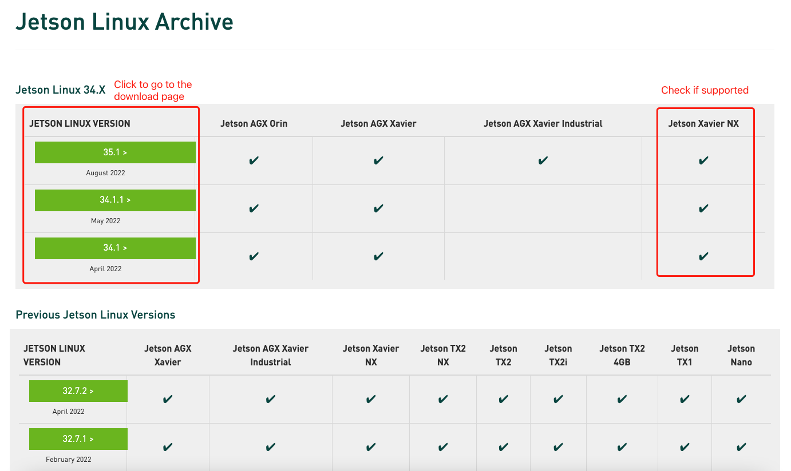
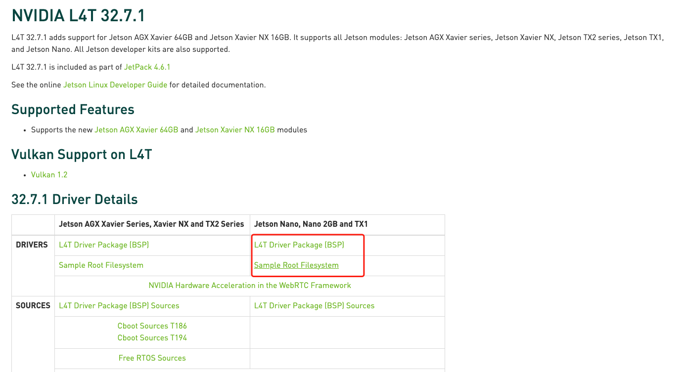
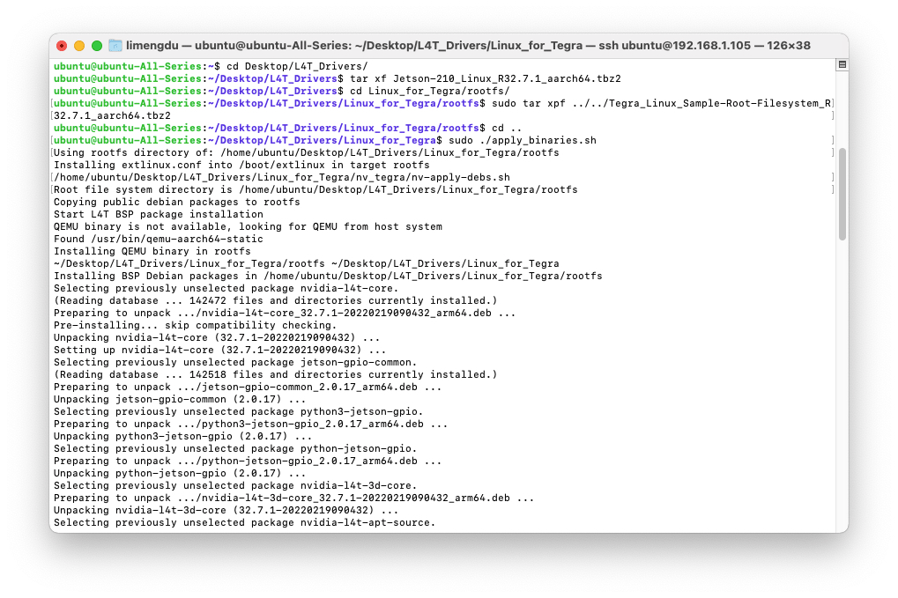
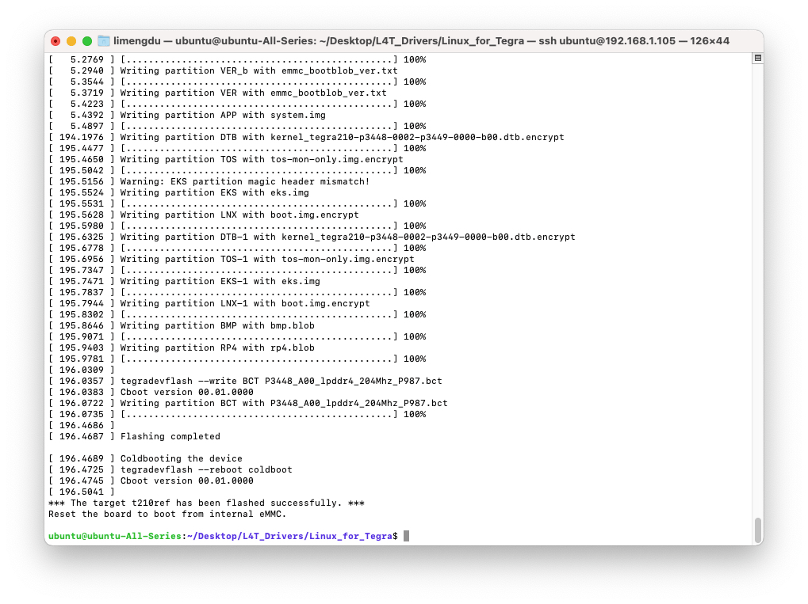

Flashing Jetson Boards
Optional Jetson Preparation
This section describes a general procedure for installing an NVIDIA Jetson Linux environment from the command line.
Flashing is optional.
If the Jetson device already has a compatible operating system and NVIDIA software environment, this procedure can be skipped.
In this project, flashing was primarily used when a clean system installation was required before additional preparation, such as storage expansion.
When Is Flashing Required?
Use this procedure when:
- The Jetson does not have an operating system
- A clean NVIDIA Jetson environment is required
- The current installation needs to be replaced or recovered
- The device must be prepared before performing additional system configuration
If the Jetson already boots correctly and provides the required software environment, continue with the next setup stage.
Requirements
The documented command-line flashing workflow requires:
- An NVIDIA Jetson or compatible reComputer device
- A separate Linux host computer
- A compatible NVIDIA Jetson Linux / L4T release
- The corresponding L4T Driver Package (BSP)
- The corresponding Sample Root Filesystem
- A USB connection between the host computer and the Jetson device
The original workflow used an Ubuntu 18.04 Linux host for the flashing process.
The Jetson Linux / L4T release must be compatible with the specific Jetson module and carrier board being flashed.
Always verify platform support before downloading and flashing an image.
1. Download the NVIDIA Jetson Linux Files
On the Linux host computer, open the NVIDIA Jetson Linux archive:
Select a release compatible with the target Jetson platform.
Download both:
- L4T Driver Package (BSP)
- Sample Root Filesystem
The downloaded files typically follow names similar to:
Jetson_Linux_Rxx.x.x_aarch64.tbz2
Tegra_Linux_Sample-Root-Filesystem_Rxx.x.x_aarch64.tbz2

2. Prepare the Flashing Directory
Create a working directory on the Linux host:
mkdir -p ~/jetson_flash
cd ~/jetson_flashCopy the downloaded BSP and Sample Root Filesystem files into this directory.
The expected structure is approximately:
jetson_flash/
├── Jetson_Linux_Rxx.x.x_aarch64.tbz2
└── Tegra_Linux_Sample-Root-Filesystem_Rxx.x.x_aarch64.tbz23. Extract the BSP and Assemble the Root Filesystem
Extract the NVIDIA Jetson Linux package:
tar xf Jetson_Linux_Rxx.x.x_aarch64.tbz2Then extract the Sample Root Filesystem into the Jetson root filesystem:
cd Linux_for_Tegra/rootfs/
sudo tar xpf ../../Tegra_Linux_Sample-Root-Filesystem_Rxx.x.x_aarch64.tbz2Return to the Linux_for_Tegra directory:
cd ..Apply the NVIDIA binaries:
sudo ./apply_binaries.shA successful execution should complete the preparation of the root filesystem before flashing.

4. Put the Jetson in Recovery Mode
Before flashing, place the target Jetson device in Force Recovery Mode and connect it to the Linux host computer through USB.
The exact recovery procedure depends on the Jetson module and carrier board.
Refer to the corresponding hardware documentation for the target device before continuing.
Verify that the host computer detects the Jetson in recovery mode before executing the flashing command.
5. Flash the Jetson
From the Linux_for_Tegra directory, the general flashing command follows:
sudo ./flash.sh <BOARD_CONFIG> mmcblk0p1where:
<BOARD_CONFIG>must correspond to the target Jetson module and carrier board.
For example, a board-specific configuration may result in a command of the form:
sudo ./flash.sh jetson-nano-emmc mmcblk0p1Do not copy the example board configuration without verifying that it matches the Jetson platform being flashed.
The board configuration passed to flash.sh is hardware-specific.
The flashing process may take several minutes.

6. First Boot
After the flashing process completes:
- Disconnect the recovery-mode jumper or restore the board to its normal boot configuration
- Disconnect the flashing USB connection if appropriate
- Power-cycle or restart the Jetson
- Complete the initial operating system setup
Once the device boots successfully, verify that the installed NVIDIA environment is available before continuing with the HAR framework configuration.
Verification
After the first boot, basic system information can be checked with:
cat /etc/os-releaseand:
cat /etc/nv_tegra_releaseThe Jetson should boot normally and report the expected operating system and NVIDIA L4T release.
If these checks succeed, continue with the remaining system preparation steps.
Troubleshooting
QEMU Binary Not Available
If the flashing process reports an error similar to:
QEMU binary is not available, looking for QEMU from host systeminstall the required package on the Linux host:
sudo apt update
sudo apt install qemu-user-staticFlashing Does Not Start
Verify that:
- The Jetson is in Force Recovery Mode
- The USB connection is working
- The selected L4T release supports the target Jetson
- Both NVIDIA packages were extracted correctly
- The correct board configuration is being passed to
flash.sh
Recommendations
- Use a native Linux host for the flashing process
- Avoid virtual machines when possible
- Verify Jetson module and carrier-board compatibility before selecting an L4T release
- Do not reflash devices that already contain a compatible and working system unless there is a specific reason to do so
References
Additional platform-specific information is available from:
Next Step
If additional storage is required, continue with:
If the Jetson already provides sufficient storage, continue directly with Software Environment.